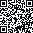

Szukam rozwiązań tam,gdzie inni widzą ograniczenia
Badania · Innowacje · Wdrożenia andryszczyk.eu
mgr inż. · badacz i wynalazca
Biomechanika · Dane i AI · B+R
+48 609 222 466
andryszczyk.marek@gmail.com
andryszczyk.eu
